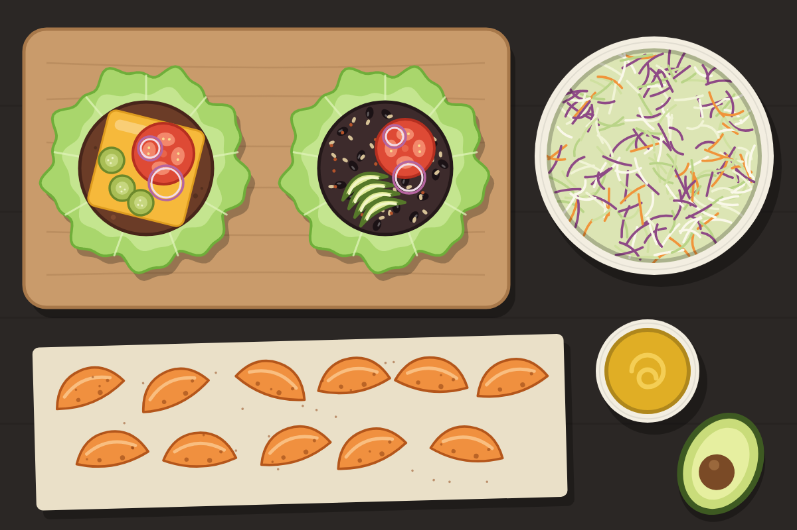

Bunless Burger Night (Beef and Black Bean)
Beef or turkey patties and dairy-free black bean patties in lettuce wraps, with vinegar slaw and roasted sweet potato wedges.

Serves 4 servings
Prep
Cook
Total
Ingredients
Meat patties
- 1 lb 90% lean ground beef or ground turkey
- 1 tsp salt
- 1/2 tsp black pepper
- 1/2 tsp garlic powder
Black bean patties
- 1 can (15 oz) black beans, drained and patted dry
- 1/2 cup rolled oats
- 1 egg
- 1 tsp ground cumin
- 1 tsp smoked paprika
- 1/2 tsp garlic powder
- 1/2 tsp salt
- 1 tbsp oil
Slaw
- 1 bag (14 oz) coleslaw mix
- 3 tbsp apple cider vinegar
- 2 tbsp olive oil
- 1 tsp Dijon mustard
- 1 tsp maple syrup
Wedges
- 2 medium sweet potatoes, cut in wedges
- 1 tbsp oil
- 1/2 tsp smoked paprika
Toppings
- 1 head butter lettuce
- 1 tomato, sliced
- pickles
- 1/4 red onion, sliced
- 1 avocado
- mustard
- sliced cheese (meat side only)
Steps
- Heat the oven to 425°F. Toss the sweet potato wedges with oil, paprika, and salt. Roast 25 to 30 minutes, flipping halfway.
- Whisk the vinegar, olive oil, Dijon, maple syrup, salt, and pepper in a large bowl. Add the coleslaw mix, toss, and let it sit.
- Mash the beans with a fork, leaving some whole. Mix in the oats, egg, cumin, paprika, garlic powder, and salt. Form 4 patties and chill 10 minutes.
- Season the meat with salt, pepper, and garlic powder and form 4 patties. Cook in a hot skillet 4 minutes per side for beef, or 5 to 6 per side for turkey until it reaches 165°F.
- Cook the bean patties in oil over medium heat, 4 to 5 minutes per side, flipping gently.
- Serve in lettuce wraps or over greens with toppings.
If eggs are out, use 1 tbsp ground flax stirred into 3 tbsp water. A store-bought dairy-free patty saves 15 minutes; check the label for milk.